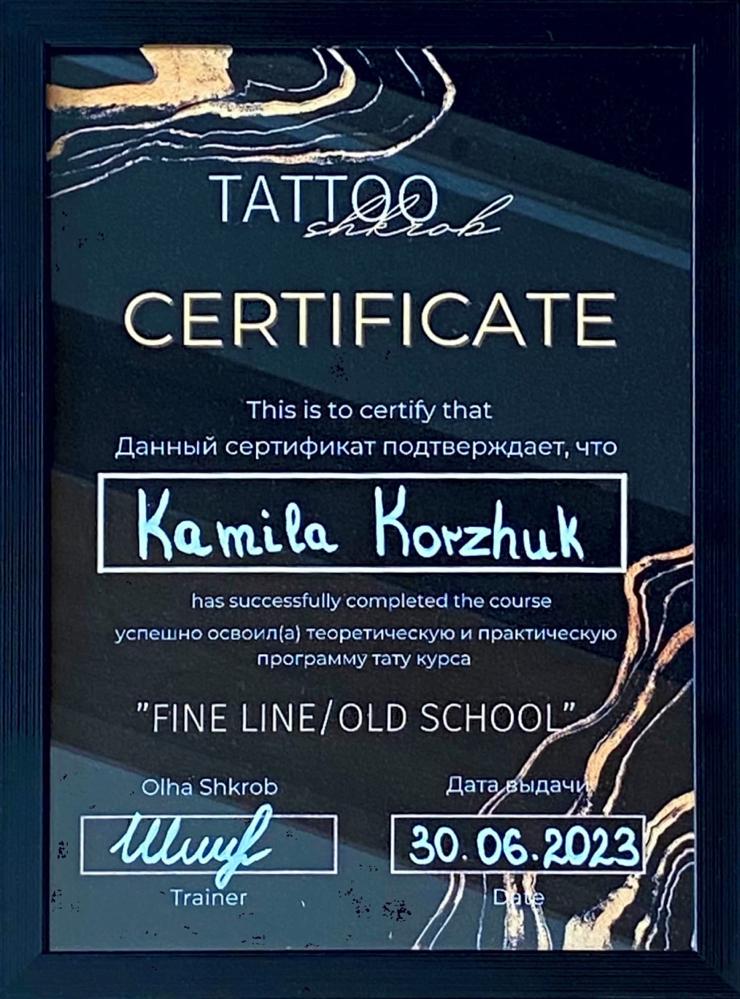

kursy

Ukończyłam ten kurs 18 marca 2023 roku. To był miesięczny kurs. Przez pierwszy tydzień polegał on na zapoznaniu się z działaniem maszynki, przyzwyczajeniem się do jej wibracji oraz typowo kucie teorii o materiałach oraz anatomii człowieka. Późniejszym etapem kursu była 3-tygodniowa praktyka na sztucznej skórze.
Ukończyłam ten kurs 30 czerwca 2023 roku u @shkrob_tattoo. To był 3-dniowy kurs, który się składał z jednego dnia teorii oraz dwóch dni praktyki na modelce (u mnie akurat była to jedna modelka na 2 dni, czasami jest po kilka/kilkanaście modelek). Na nim nauczyłam się wykonywać minimalistyczne tatuaże oraz tatuaże w stylu old school.